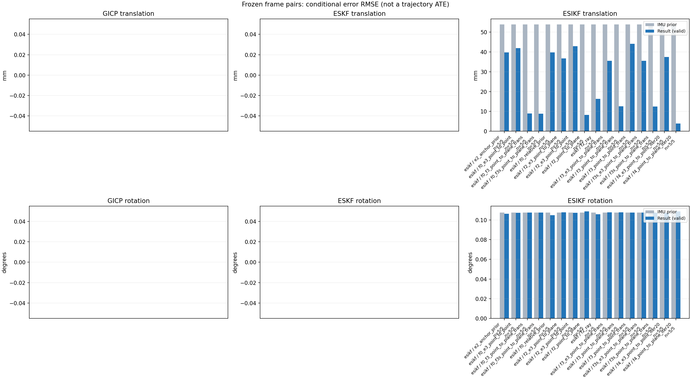

20261015_113028_roll_right · depth=disparity_cache · cache=2751612eea0a343ab704
模型视差：/home/ubuntu22/slam/SIO_SLAM/models/tensorrt/disp_896x448_fp16.plan；engine SHA256=604cf6ac1f705c877260711730dd5d2d58c2a21f3020c03c668401ef7fb1e768。输入为生产裁剪与光照处理后的 RGB 0..255；此实验使用原始浮点像素视差，不应用完整前端的邻域视差后处理。
原始 ONNX SHA256：e9f49736a65d68d06681add463866b6defdf78fdd7f4f50f6cc941b682fdc0bc。
代价体图改写验证：ONNX Runtime 固定随机特征输入，最大绝对误差 0；该项检查图改写，完整模型精度仍需由录制数据评估。
配准代码版本：744ac2d993ae629b0cc44a3b1d995e04ab4fad48；观测生成版本：744ac2d993ae629b0cc44a3b1d995e04ab4fad48。
固定图像对与纯 IMU 先验；ESKF 回放固定 GICP 观测，ESIKF 直接读取点云。真值只用于此报告。
同时查看 converged 与 solver_status：上游默认 Stereo 在 max_iter / stopped_at_minimum 时也可能置 converged=true。valid 表示输入检查通过，不表示精度提升。欧氏 GICP 未提供独立的点距 RMSE，该列显示 NaN。
误差按每对图像的锚点计算，单位 m / degrees。此处 RMSE 不是全序列 ATE；末帧受同一锚点条件约束。NIS 与条件马氏距离是诊断量，少量相关图像对不能用于宣称协方差已校准。
全部指标 CSV · R / P 矩阵 CSV · Stereo 求解逐轮 CSV · ESIKF 逐轮轨迹 CSV · 末轮 H / R / K_pose 矩阵 CSV · 配置快照 · 矢量图
unflagged 排除纯惯性先验平移误差超过 50 mm 的图像对；whitened 为误差按协方差白化后的每自由度均值，协方差与实际误差相符时约为 1。prior_whitened 用真值误差只检验先验 P；NIS 为 ESIKF 首轮 rᵀ(P+R)⁻¹r，不用真值，检验的是 P+R 的总量，单靠它分不开 P 与 R，偏差、错误对应和线性化误差也会抬高它。观测方差超过先验方差 1e+04 倍的方向视为不可观，从 NIS 及其自由度中去掉（nis_dof）。一致时 nis_per_dof 均值约 1、nis_over_chi2_median 中位数约 1；帧对少且共享序列，超出 95% 分位的比例只作参考。
| stage | method | variant | valid | total | result_translation_rmse_m | result_rotation_rmse_deg | result_translation_median_m | result_rotation_median_deg | result_translation_rmse_unflagged_m | result_rotation_rmse_unflagged_deg | improved_translation | improved_rotation | posterior_whitened_by_P_rot_mean | posterior_whitened_by_P_trans_mean | prior_whitened_by_P_rot_mean | prior_whitened_by_P_trans_mean | nis_per_dof_mean | nis_over_chi2_median_median | nis_exceeds_chi2_95_fraction |
|---|---|---|---|---|---|---|---|---|---|---|---|---|---|---|---|---|---|---|---|
| esikf | esikf | e2_anchor_prior | 5 | 5 | 0.039703 | 0.10634 | 0.0019306 | 0.0093933 | 0.0036631 | 0.11888 | 2 | 5 | 861.07 | 6862.3 | 628.19 | 27.683 | 36.463 | 3.6236 | 0.8 |
| esikf | esikf | f0_e3_point_to_point | 5 | 5 | 0.04188 | 0.10738 | 0.0018502 | 0.0094735 | 0.0034016 | 0.12003 | 3 | 4 | 504.01 | 92.69 | 497.67 | 2.1764 | 0.21694 | 0.028236 | 0 |
| esikf | esikf | f0_f3_point_to_plane_trans | 5 | 5 | 0.0089548 | 0.1074 | 0.0036544 | 0.0094714 | 0.0036907 | 0.12006 | 2 | 3 | 503.95 | 42.102 | 497.67 | 2.1764 | 1.5944 | 0.038822 | 0.2 |
| esikf | esikf | f0_f3s_point_to_plane_trans | 5 | 5 | 0.0088102 | 0.10739 | 0.003715 | 0.0094797 | 0.0036827 | 0.12005 | 2 | 0 | 497.67 | 41.14 | 497.67 | 2.1764 | 1.5944 | 0.038822 | 0.2 |
| esikf | esikf | f0_relative_prior | 5 | 5 | 0.039793 | 0.1049 | 0.0033477 | 0.0092696 | 0.0040085 | 0.11726 | 2 | 4 | 531.04 | 6763.4 | 497.67 | 2.1764 | 35.686 | 3.5489 | 0.8 |
| esikf | esikf | f2_e3_point_to_plane | 5 | 5 | 0.036671 | 0.10775 | 0.0016064 | 0.0094769 | 0.0036306 | 0.12045 | 5 | 3 | 690.63 | 30.632 | 628.19 | 27.683 | 1.8186 | 0.07514 | 0.2 |
| esikf | esikf | f2_e3_point_to_point | 5 | 5 | 0.042931 | 0.10733 | 0.001625 | 0.0094778 | 0.0043671 | 0.11998 | 5 | 4 | 750.21 | 95.641 | 628.19 | 27.683 | 0.74788 | 0.012557 | 0.2 |
| esikf | esikf | f2_point_to_plane | 5 | 5 | 0.0082451 | 0.10864 | 0.0013287 | 0.0094496 | 0.0035255 | 0.12145 | 3 | 3 | 807.43 | 31.319 | 628.19 | 27.683 | 6.7596 | 3.281 | 0.6 |
| esikf | esikf | f2_ray | 5 | 5 | 0.016313 | 0.10579 | 0.0011472 | 0.0093411 | 0.0089346 | 0.11827 | 2 | 4 | 762.84 | 135.93 | 628.19 | 27.683 | 6.5312 | 2.5806 | 0.4 |
| esikf | esikf | f3_e3_point_to_plane_trans | 5 | 5 | 0.035521 | 0.10763 | 0.0016162 | 0.0094766 | 0.0034865 | 0.12032 | 5 | 4 | 689.37 | 30.221 | 628.19 | 27.683 | 2.4615 | 0.11116 | 0.2 |
| esikf | esikf | f3_point_to_plane_trans | 5 | 5 | 0.01255 | 0.10777 | 0.0015444 | 0.0093868 | 0.0024871 | 0.12048 | 4 | 4 | 793.76 | 77.072 | 628.19 | 27.683 | 6.2445 | 2.4687 | 0.2 |
| esikf | esikf | f3_point_to_point_trans | 5 | 5 | 0.044094 | 0.10747 | 0.0031258 | 0.0093779 | 0.0031844 | 0.12015 | 3 | 4 | 828.6 | 7225.2 | 628.19 | 27.683 | 9.8049 | 0.56039 | 0.4 |
| esikf | esikf | f3s_e3_point_to_plane_trans | 5 | 5 | 0.035556 | 0.10739 | 0.0016162 | 0.0094797 | 0.0034899 | 0.12005 | 5 | 0 | 628.19 | 30.229 | 628.19 | 27.683 | 2.4615 | 0.11116 | 0.2 |
| esikf | esikf | f3s_point_to_plane_trans | 5 | 5 | 0.012459 | 0.10739 | 0.0015454 | 0.0094797 | 0.0025235 | 0.12005 | 4 | 0 | 628.19 | 76.03 | 628.19 | 27.683 | 6.2445 | 2.4687 | 0.2 |
| esikf | esikf | f4_e3_point_to_point_iter20 | 5 | 5 | 0.037431 | 0.10732 | 0.001625 | 0.0094778 | 0.0043671 | 0.11998 | 5 | 4 | 750.15 | 75.088 | 628.19 | 27.683 | 0.74788 | 0.012557 | 0.2 |
| esikf | esikf | f4_point_to_plane_iter20 | 5 | 5 | 0.0038735 | 0.10865 | 0.0013287 | 0.0094496 | 0.0035255 | 0.12145 | 3 | 2 | 807.91 | 9.6587 | 628.19 | 27.683 | 6.7596 | 3.281 | 0.6 |

| stage | case | method | variant | status | solver_status | inliers | converged | covariance_convention | covariance_from_hessian | fitness | registration_rmse_m | prior_trans_error_m | result_trans_error_m | prior_rot_error_deg | result_rot_error_deg | prior_flagged | R_rot_trace_rad2 | R_pos_trace_m2 | nis_regularized | posterior_whitened_by_P_rot | posterior_whitened_by_P_trans | prior_whitened_by_P_rot | prior_whitened_by_P_trans | nis_per_dof | nis_dof |
|---|---|---|---|---|---|---|---|---|---|---|---|---|---|---|---|---|---|---|---|---|---|---|---|---|---|
| esikf | static_start | esikf | e2_anchor_prior | updated | converged | 9346 | 1 | 1 | 0 | 0 | 7.6181e-05 | 9.2127e-05 | 0.0061233 | 0.0061146 | 0 | 1.4895e-07 | 8.9459e-07 | nan | 14.728 | 0.059017 | 14.576 | 0.021997 | 0.16105 | 6 | |
| esikf | static_start | esikf | f0_relative_prior | updated | converged | 9346 | 1 | 1 | 0 | 0 | 7.6181e-05 | 0.00017901 | 0.0061233 | 0.0060671 | 0 | 1.4895e-07 | 8.946e-07 | nan | 7.5089 | 0.091772 | 7.546 | 0.00095749 | 0.13467 | 6 | |
| esikf | static_start | esikf | f2_point_to_plane | updated | converged | 9346 | 1 | 1 | 0 | 0 | 7.6181e-05 | 0.00017683 | 0.0061233 | 0.0061711 | 0 | 1.5387e-06 | 5.0021e-06 | nan | 14.819 | 0.13801 | 14.576 | 0.021997 | 1.425 | 6 | |
| esikf | static_start | esikf | f2_ray | updated | converged | 9346 | 1 | 1 | 0 | 0 | 7.6181e-05 | 0.00012666 | 0.0061233 | 0.0061224 | 0 | 0.060255 | 6.9118e-05 | nan | 14.572 | 0.068585 | 14.576 | 0.021997 | 2.0352 | 3 | |
| esikf | static_start | esikf | f3_point_to_point_trans | updated | converged | 9346 | 1 | 1 | 0 | 0 | 7.6181e-05 | 0.00021491 | 0.0061233 | 0.0061229 | 0 | 0.14895 | 8.9462e-07 | nan | 14.575 | 0.35979 | 14.576 | 0.021997 | 0.44196 | 3 | |
| esikf | static_start | esikf | f3_point_to_plane_trans | updated | converged | 9346 | 1 | 1 | 0 | 0 | 7.6181e-05 | 0.00020802 | 0.0061233 | 0.0061227 | 0 | 1.5387 | 5.002e-06 | nan | 14.574 | 0.19556 | 14.576 | 0.021997 | 1.947 | 3 | |
| esikf | static_start | esikf | f0_f3_point_to_plane_trans | updated | converged | 9415 | 1 | 1 | 0 | 0 | 7.6181e-05 | 0.0031377 | 0.0061233 | 0.0061213 | 0 | 1.4857 | 4.6157e-06 | nan | 7.5397 | 4.3622 | 7.546 | 0.00095749 | 0.65281 | 3 | |
| esikf | static_start | esikf | f3s_point_to_plane_trans | updated | converged | 9346 | 1 | 1 | 0 | 0 | 7.6181e-05 | 0.00020802 | 0.0061233 | 0.0061233 | 0 | 1.5387 | 5.002e-06 | nan | 14.576 | 0.19556 | 14.576 | 0.021997 | 1.947 | 3 | |
| esikf | static_start | esikf | f0_f3s_point_to_plane_trans | updated | converged | 9415 | 1 | 1 | 0 | 0 | 7.6181e-05 | 0.0031377 | 0.0061233 | 0.0061233 | 0 | 1.4857 | 4.6157e-06 | nan | 7.546 | 4.3622 | 7.546 | 0.00095749 | 0.65281 | 3 | |
| esikf | static_start | esikf | f4_point_to_plane_iter20 | updated | converged | 9346 | 1 | 1 | 0 | 0 | 7.6181e-05 | 0.00017683 | 0.0061233 | 0.0061711 | 0 | 1.5387e-06 | 5.0021e-06 | nan | 14.819 | 0.13801 | 14.576 | 0.021997 | 1.425 | 6 | |
| esikf | static_start | esikf | f2_e3_point_to_point | updated | converged | 9346 | 1 | 1 | 0 | 0 | 7.6181e-05 | 7.4907e-05 | 0.0061233 | 0.0061236 | 0 | 1.6563e-05 | 7.4412e-05 | nan | 14.581 | 0.021588 | 14.576 | 0.021997 | 0.0018251 | 4 | |
| esikf | static_start | esikf | f0_e3_point_to_point | updated | converged | 9346 | 1 | 1 | 0 | 0 | 7.6181e-05 | 6.0758e-05 | 0.0061233 | 0.0061235 | 0 | 1.6563e-05 | 7.4412e-05 | nan | 7.549 | 0.00099527 | 7.546 | 0.00095749 | 0.0015705 | 5 | |
| esikf | static_start | esikf | f2_e3_point_to_plane | updated | converged | 9346 | 1 | 1 | 0 | 0 | 7.6181e-05 | 7.3335e-05 | 0.0061233 | 0.0061243 | 0 | 8.9911e-05 | 0.00017968 | nan | 14.582 | 0.020453 | 14.576 | 0.021997 | 0.059261 | 3 | |
| esikf | static_start | esikf | f3_e3_point_to_plane_trans | updated | converged | 9346 | 1 | 1 | 0 | 0 | 7.6181e-05 | 7.4599e-05 | 0.0061233 | 0.0061233 | 0 | 1.5388 | 0.00017968 | nan | 14.576 | 0.021165 | 14.576 | 0.021997 | 0.059826 | 3 | |
| esikf | static_start | esikf | f3s_e3_point_to_plane_trans | updated | converged | 9346 | 1 | 1 | 0 | 0 | 7.6181e-05 | 7.4599e-05 | 0.0061233 | 0.0061233 | 0 | 1.5388 | 0.00017968 | nan | 14.576 | 0.021165 | 14.576 | 0.021997 | 0.059826 | 3 | |
| esikf | static_start | esikf | f4_e3_point_to_point_iter20 | updated | converged | 9346 | 1 | 1 | 0 | 0 | 7.6181e-05 | 7.4907e-05 | 0.0061233 | 0.0061236 | 0 | 1.6563e-05 | 7.4412e-05 | nan | 14.581 | 0.021588 | 14.576 | 0.021997 | 0.0018251 | 4 | |
| esikf | sync_motion | esikf | e2_anchor_prior | updated | converged | 9609 | 1 | 1 | 0 | 0 | 0.00070607 | 0.00078887 | 0.0094797 | 0.0093933 | 0 | 1.5016e-07 | 8.8945e-07 | nan | 31.811 | 3.6531 | 32.188 | 1.0267 | 4.6589 | 6 | |
| esikf | sync_motion | esikf | f0_relative_prior | updated_not_converged | max_iterations | 9649 | 0 | 1 | 0 | 0 | 0.00070607 | 0.0033477 | 0.0094797 | 0.0092696 | 0 | 1.4741e-07 | 8.633e-07 | nan | 21.644 | 45.957 | 21.516 | 0.0030519 | 4.3142 | 6 | |
| esikf | sync_motion | esikf | f2_point_to_plane | updated | converged | 9599 | 1 | 1 | 0 | 0 | 0.00070607 | 0.00073098 | 0.0094797 | 0.0094496 | 0 | 1.3887e-06 | 4.9608e-06 | nan | 32.306 | 1.2998 | 32.188 | 1.0267 | 2.9245 | 6 | |
| esikf | sync_motion | esikf | f2_ray | updated | converged | 9601 | 1 | 1 | 0 | 0 | 0.00070607 | 0.00072624 | 0.0094797 | 0.0093411 | 0 | 0.03618 | 3.457e-05 | nan | 31.492 | 1.1228 | 32.188 | 1.0267 | 3.5948 | 3 | |
| esikf | sync_motion | esikf | f3_point_to_point_trans | updated | converged | 9595 | 1 | 1 | 0 | 0 | 0.00070607 | 0.0031258 | 0.0094797 | 0.0093779 | 0 | 0.15024 | 8.8021e-07 | nan | 31.777 | 67.931 | 32.188 | 1.0267 | 5.8667 | 3 | |
| esikf | sync_motion | esikf | f3_point_to_plane_trans | updated | converged | 9593 | 1 | 1 | 0 | 0 | 0.00070607 | 0.00044902 | 0.0094797 | 0.0093868 | 0 | 1.3907 | 4.9905e-06 | nan | 31.769 | 0.52864 | 32.188 | 1.0267 | 1.9579 | 3 | |
| esikf | sync_motion | esikf | f0_f3_point_to_plane_trans | updated_not_converged | max_iterations | 9674 | 0 | 1 | 0 | 0 | 0.00070607 | 0.0036544 | 0.0094797 | 0.0094714 | 0 | 1.3256 | 4.3569e-06 | nan | 21.5 | 5.4402 | 21.516 | 0.0030519 | 0.030618 | 3 | |
| esikf | sync_motion | esikf | f3s_point_to_plane_trans | updated | converged | 9593 | 1 | 1 | 0 | 0 | 0.00070607 | 0.00044869 | 0.0094797 | 0.0094797 | 0 | 1.3906 | 4.9906e-06 | nan | 32.188 | 0.52792 | 32.188 | 1.0267 | 1.9579 | 3 | |
| esikf | sync_motion | esikf | f0_f3s_point_to_plane_trans | updated_not_converged | max_iterations | 9674 | 0 | 1 | 0 | 0 | 0.00070607 | 0.003715 | 0.0094797 | 0.0094797 | 0 | 1.3268 | 4.3665e-06 | nan | 21.516 | 5.5727 | 21.516 | 0.0030519 | 0.030618 | 3 | |
| esikf | sync_motion | esikf | f4_point_to_plane_iter20 | updated | converged | 9599 | 1 | 1 | 0 | 0 | 0.00070607 | 0.00073098 | 0.0094797 | 0.0094496 | 0 | 1.3887e-06 | 4.9608e-06 | nan | 32.306 | 1.2998 | 32.188 | 1.0267 | 2.9245 | 6 | |
| esikf | sync_motion | esikf | f2_e3_point_to_point | updated | converged | 9601 | 1 | 1 | 0 | 0 | 0.00070607 | 0.00070156 | 0.0094797 | 0.0094778 | 0 | 1.6731e-05 | 7.3979e-05 | nan | 32.186 | 1.0311 | 32.188 | 1.0267 | 0.0059746 | 4 | |
| esikf | sync_motion | esikf | f0_e3_point_to_point | updated | converged | 9608 | 1 | 1 | 0 | 0 | 0.00070607 | 0.0007644 | 0.0094797 | 0.0094735 | 0 | 1.6717e-05 | 7.4146e-05 | nan | 21.514 | 0.030522 | 21.516 | 0.0030519 | 0.034958 | 5 | |
| esikf | sync_motion | esikf | f2_e3_point_to_plane | updated | converged | 9601 | 1 | 1 | 0 | 0 | 0.00070607 | 0.00070141 | 0.0094797 | 0.0094769 | 0 | 8.1358e-05 | 0.00017826 | nan | 32.179 | 1.021 | 32.188 | 1.0267 | 0.037015 | 3 | |
| esikf | sync_motion | esikf | f3_e3_point_to_plane_trans | updated | converged | 9601 | 1 | 1 | 0 | 0 | 0.00070607 | 0.00069371 | 0.0094797 | 0.0094766 | 0 | 1.3924 | 0.00017826 | nan | 32.174 | 0.99815 | 32.188 | 1.0267 | 0.074253 | 3 | |
| esikf | sync_motion | esikf | f3s_e3_point_to_plane_trans | updated | converged | 9601 | 1 | 1 | 0 | 0 | 0.00070607 | 0.00069371 | 0.0094797 | 0.0094797 | 0 | 1.3924 | 0.00017826 | nan | 32.188 | 0.99815 | 32.188 | 1.0267 | 0.074253 | 3 | |
| esikf | sync_motion | esikf | f4_e3_point_to_point_iter20 | updated | converged | 9601 | 1 | 1 | 0 | 0 | 0.00070607 | 0.00070156 | 0.0094797 | 0.0094778 | 0 | 1.6731e-05 | 7.3979e-05 | nan | 32.186 | 1.0311 | 32.188 | 1.0267 | 0.0059746 | 4 | |
| esikf | main_motion | esikf | e2_anchor_prior | updated_not_converged | max_iterations | 12080 | 0 | 1 | 0 | 0 | 0.001643 | 0.0019306 | 0.075969 | 0.075354 | 0 | 1.1835e-07 | 8.6793e-07 | nan | 2179.9 | 17.171 | 1824.6 | 0.70892 | 3.2299 | 6 | |
| esikf | main_motion | esikf | f0_relative_prior | updated_not_converged | max_iterations | 12078 | 0 | 1 | 0 | 0 | 0.001643 | 0.0024044 | 0.075969 | 0.075656 | 0 | 1.1821e-07 | 8.6296e-07 | nan | 1682.5 | 23.509 | 1662.1 | 0.0023899 | 3.1633 | 6 | |
| esikf | main_motion | esikf | f2_point_to_plane | updated | converged | 12065 | 1 | 1 | 0 | 0 | 0.001643 | 0.0013287 | 0.075969 | 0.075782 | 0 | 1.2046e-06 | 4.986e-06 | nan | 2014.3 | 1.9524 | 1824.6 | 0.70892 | 2.0984 | 6 | |
| esikf | main_motion | esikf | f2_ray | updated | converged | 12063 | 1 | 1 | 0 | 0 | 0.001643 | 0.0011472 | 0.075969 | 0.076009 | 0 | 0.023583 | 2.5617e-05 | nan | 1953.5 | 1.0476 | 1824.6 | 0.70892 | 0.40523 | 3 | |
| esikf | main_motion | esikf | f3_point_to_point_trans | updated | converged | 12063 | 1 | 1 | 0 | 0 | 0.001643 | 0.0013394 | 0.075969 | 0.075962 | 0 | 0.12011 | 8.9614e-07 | nan | 2177.9 | 4.3477 | 1824.6 | 0.70892 | 0.017695 | 3 | |
| esikf | main_motion | esikf | f3_point_to_plane_trans | updated | converged | 12062 | 1 | 1 | 0 | 0 | 0.001643 | 0.0015444 | 0.075969 | 0.075932 | 0 | 1.2082 | 5.0166e-06 | nan | 2011.4 | 3.5061 | 1824.6 | 0.70892 | 1.1424 | 3 | |
| esikf | main_motion | esikf | f0_f3_point_to_plane_trans | updated_not_converged | max_iterations | 12063 | 0 | 1 | 0 | 0 | 0.001643 | 0.0030757 | 0.075969 | 0.075959 | 0 | 1.2096 | 4.935e-06 | nan | 1676.3 | 5.6772 | 1662.1 | 0.0023899 | 0.0046967 | 3 | |
| esikf | main_motion | esikf | f3s_point_to_plane_trans | updated | converged | 12062 | 1 | 1 | 0 | 0 | 0.001643 | 0.0015454 | 0.075969 | 0.075969 | 0 | 1.2083 | 5.0152e-06 | nan | 1824.6 | 3.5094 | 1824.6 | 0.70892 | 1.1424 | 3 | |
| esikf | main_motion | esikf | f0_f3s_point_to_plane_trans | updated_not_converged | max_iterations | 12063 | 0 | 1 | 0 | 0 | 0.001643 | 0.0030755 | 0.075969 | 0.075969 | 0 | 1.2096 | 4.935e-06 | nan | 1662.1 | 5.677 | 1662.1 | 0.0023899 | 0.0046967 | 3 | |
| esikf | main_motion | esikf | f4_point_to_plane_iter20 | updated | converged | 12065 | 1 | 1 | 0 | 0 | 0.001643 | 0.0013287 | 0.075969 | 0.075782 | 0 | 1.2046e-06 | 4.986e-06 | nan | 2014.3 | 1.9524 | 1824.6 | 0.70892 | 2.0984 | 6 | |
| esikf | main_motion | esikf | f2_e3_point_to_point | updated | converged | 12070 | 1 | 1 | 0 | 0 | 0.001643 | 0.001625 | 0.075969 | 0.075955 | 0 | 1.3291e-05 | 7.3824e-05 | nan | 1897.7 | 0.74262 | 1824.6 | 0.70892 | 0.009903 | 3 | |
| esikf | main_motion | esikf | f0_e3_point_to_point | updated_not_converged | max_iterations | 12079 | 0 | 1 | 0 | 0 | 0.001643 | 0.0018502 | 0.075969 | 0.075962 | 0 | 1.3185e-05 | 7.2392e-05 | nan | 1676.5 | 0.18609 | 1662.1 | 0.0023899 | 0.01977 | 5 | |
| esikf | main_motion | esikf | f2_e3_point_to_plane | updated | converged | 12070 | 1 | 1 | 0 | 0 | 0.001643 | 0.0016064 | 0.075969 | 0.075962 | 0 | 7.0909e-05 | 0.00018135 | nan | 1835.2 | 0.73346 | 1824.6 | 0.70892 | 0.033032 | 3 | |
| esikf | main_motion | esikf | f3_e3_point_to_plane_trans | updated | converged | 12070 | 1 | 1 | 0 | 0 | 0.001643 | 0.0016162 | 0.075969 | 0.075961 | 0 | 1.2136 | 0.00018135 | nan | 1834.7 | 0.75335 | 1824.6 | 0.70892 | 0.087664 | 3 | |
| esikf | main_motion | esikf | f3s_e3_point_to_plane_trans | updated | converged | 12070 | 1 | 1 | 0 | 0 | 0.001643 | 0.0016162 | 0.075969 | 0.075969 | 0 | 1.2136 | 0.00018135 | nan | 1824.6 | 0.75335 | 1824.6 | 0.70892 | 0.087664 | 3 | |
| esikf | main_motion | esikf | f4_e3_point_to_point_iter20 | updated | converged | 12070 | 1 | 1 | 0 | 0 | 0.001643 | 0.001625 | 0.075969 | 0.075955 | 0 | 1.3291e-05 | 7.3824e-05 | nan | 1897.7 | 0.74262 | 1824.6 | 0.70892 | 0.009903 | 3 | |
| esikf | main_motion_long | esikf | e2_anchor_prior | updated_not_converged | max_iterations | 12227 | 0 | 1 | 0 | 0 | 0.0098867 | 0.0070226 | 0.22748 | 0.22522 | 0 | 1.3031e-07 | 9.3894e-07 | nan | 2074.4 | 127.25 | 1264.2 | 0.67484 | 2.6823 | 6 | |
| esikf | main_motion_long | esikf | f0_relative_prior | updated_not_converged | max_iterations | 12227 | 0 | 1 | 0 | 0 | 0.0098867 | 0.006874 | 0.22748 | 0.22171 | 0 | 1.3031e-07 | 9.4005e-07 | nan | 939.29 | 85.726 | 792.85 | 0.0023602 | 2.5256 | 6 | |
| esikf | main_motion_long | esikf | f2_point_to_plane | updated | converged | 12297 | 1 | 1 | 0 | 0 | 0.0098867 | 0.0068838 | 0.22748 | 0.2305 | 0 | 1.2712e-06 | 4.8153e-06 | nan | 1971.4 | 27.329 | 1264.2 | 0.67484 | 7.3961 | 6 | |
| esikf | main_motion_long | esikf | f2_ray | updated_not_converged | max_iterations | 12318 | 0 | 1 | 0 | 0 | 0.0098867 | 0.017817 | 0.22748 | 0.22371 | 0 | 0.0092797 | 9.9526e-06 | nan | 1810.3 | 83.375 | 1264.2 | 0.67484 | 0.54122 | 3 | |
| esikf | main_motion_long | esikf | f3_point_to_point_trans | updated_not_converged | max_iterations | 12216 | 0 | 1 | 0 | 0 | 0.0098867 | 0.0053806 | 0.22748 | 0.2277 | 0 | 0.13037 | 9.3187e-07 | nan | 1916.8 | 112.85 | 1264.2 | 0.67484 | 0.067719 | 3 | |
| esikf | main_motion_long | esikf | f3_point_to_plane_trans | updated | converged | 12220 | 1 | 1 | 0 | 0 | 0.0098867 | 0.0047023 | 0.22748 | 0.2284 | 0 | 1.2953 | 4.8923e-06 | nan | 1907.8 | 11.975 | 1264.2 | 0.67484 | 0.35526 | 3 | |
| esikf | main_motion_long | esikf | f0_f3_point_to_plane_trans | updated | converged | 12220 | 1 | 1 | 0 | 0 | 0.0098867 | 0.0046718 | 0.22748 | 0.2275 | 0 | 1.2958 | 4.9063e-06 | nan | 808.7 | 11.831 | 792.85 | 0.0023602 | 0.00096911 | 3 | |
| esikf | main_motion_long | esikf | f3s_point_to_plane_trans | updated_not_converged | max_iterations | 12219 | 0 | 1 | 0 | 0 | 0.0098867 | 0.004779 | 0.22748 | 0.22748 | 0 | 1.298 | 4.9151e-06 | nan | 1264.2 | 12.466 | 1264.2 | 0.67484 | 0.35526 | 3 | |
| esikf | main_motion_long | esikf | f0_f3s_point_to_plane_trans | updated_not_converged | max_iterations | 12221 | 0 | 1 | 0 | 0 | 0.0098867 | 0.0045981 | 0.22748 | 0.22748 | 0 | 1.2944 | 4.8909e-06 | nan | 792.85 | 11.417 | 792.85 | 0.0023602 | 0.00096911 | 3 | |
| esikf | main_motion_long | esikf | f4_point_to_plane_iter20 | updated | converged | 12297 | 1 | 1 | 0 | 0 | 0.0098867 | 0.0068838 | 0.22748 | 0.2305 | 0 | 1.2712e-06 | 4.8153e-06 | nan | 1971.4 | 27.329 | 1264.2 | 0.67484 | 7.3961 | 6 | |
| esikf | main_motion_long | esikf | f2_e3_point_to_point | updated | converged | 12260 | 1 | 1 | 0 | 0 | 0.0098867 | 0.0085527 | 0.22748 | 0.22734 | 0 | 1.4318e-05 | 7.6514e-05 | nan | 1803.2 | 2.5521 | 1264.2 | 0.67484 | 0.028525 | 6 | |
| esikf | main_motion_long | esikf | f0_e3_point_to_point | updated_not_converged | max_iterations | 12224 | 0 | 1 | 0 | 0 | 0.0098867 | 0.0065017 | 0.22748 | 0.22744 | 0 | 1.4458e-05 | 7.7616e-05 | nan | 810.03 | 1.6045 | 792.85 | 0.0023602 | 0.025168 | 6 | |
| esikf | main_motion_long | esikf | f2_e3_point_to_plane | updated | converged | 12237 | 1 | 1 | 0 | 0 | 0.0098867 | 0.0070461 | 0.22748 | 0.22834 | 0 | 7.4993e-05 | 0.00017528 | nan | 1568 | 1.2935 | 1264.2 | 0.67484 | 0.18153 | 5 | |
| esikf | main_motion_long | esikf | f3_e3_point_to_plane_trans | updated | converged | 12222 | 1 | 1 | 0 | 0 | 0.0098867 | 0.006747 | 0.22748 | 0.22807 | 0 | 1.2931 | 0.00017629 | nan | 1562.1 | 0.98409 | 1264.2 | 0.67484 | 0.23815 | 3 | |
| esikf | main_motion_long | esikf | f3s_e3_point_to_plane_trans | updated | converged | 12223 | 1 | 1 | 0 | 0 | 0.0098867 | 0.0067541 | 0.22748 | 0.22748 | 0 | 1.2931 | 0.00017617 | nan | 1264.2 | 0.98209 | 1264.2 | 0.67484 | 0.23815 | 3 | |
| esikf | main_motion_long | esikf | f4_e3_point_to_point_iter20 | updated | converged | 12260 | 1 | 1 | 0 | 0 | 0.0098867 | 0.0085527 | 0.22748 | 0.22734 | 0 | 1.4318e-05 | 7.6514e-05 | nan | 1803.2 | 2.5521 | 1264.2 | 0.67484 | 0.028525 | 6 | |
| esikf | static_end | esikf | e2_anchor_prior | updated_not_converged | max_iterations | 9101 | 0 | 1 | 0 | 0 | 0.1201 | 0.088477 | 0.0045728 | 0.0040091 | 1 | 1.7819e-07 | 1.0781e-06 | nan | 4.5417 | 34163 | 5.4042 | 135.98 | 171.58 | 6 | |
| esikf | static_end | esikf | f0_relative_prior | updated_not_converged | max_iterations | 9094 | 0 | 1 | 0 | 0 | 0.1201 | 0.088618 | 0.0045728 | 0.0045812 | 1 | 1.79e-07 | 1.096e-06 | nan | 4.2869 | 33662 | 4.3113 | 10.873 | 168.29 | 6 | |
| esikf | static_end | esikf | f2_point_to_plane | updated_not_converged | max_iterations | 9222 | 0 | 1 | 0 | 0 | 0.1201 | 0.017035 | 0.0045728 | 0.003718 | 1 | 1.5799e-06 | 4.5189e-06 | nan | 4.4089 | 125.87 | 5.4042 | 135.98 | 19.954 | 6 | |
| esikf | static_end | esikf | f2_ray | updated_not_converged | max_iterations | 8870 | 0 | 1 | 0 | 0 | 0.1201 | 0.031799 | 0.0045728 | 0.0034484 | 1 | 0.013406 | 1.7302e-05 | nan | 4.32 | 594.06 | 5.4042 | 135.98 | 26.079 | 3 | |
| esikf | static_end | esikf | f3_point_to_point_trans | updated_not_converged | max_iterations | 8895 | 0 | 1 | 0 | 0 | 0.1201 | 0.098391 | 0.0045728 | 0.0024894 | 1 | 0.20053 | 1.4156e-06 | nan | 1.9696 | 35940 | 5.4042 | 135.98 | 42.63 | 3 | |
| esikf | static_end | esikf | f3_point_to_plane_trans | updated_not_converged | max_iterations | 8896 | 0 | 1 | 0 | 0 | 0.1201 | 0.027618 | 0.0045728 | 0.002944 | 1 | 1.6857 | 5.147e-06 | nan | 3.2573 | 369.15 | 5.4042 | 135.98 | 25.82 | 3 | |
| esikf | static_end | esikf | f0_f3_point_to_plane_trans | updated_not_converged | max_iterations | 8932 | 0 | 1 | 0 | 0 | 0.1201 | 0.018613 | 0.0045728 | 0.0050333 | 1 | 1.6866 | 5.0534e-06 | nan | 5.7138 | 183.2 | 4.3113 | 10.873 | 7.2828 | 3 | |
| esikf | static_end | esikf | f3s_point_to_plane_trans | updated_not_converged | max_iterations | 8899 | 0 | 1 | 0 | 0 | 0.1201 | 0.027398 | 0.0045728 | 0.0045728 | 1 | 1.6986 | 5.1382e-06 | nan | 5.4042 | 363.45 | 5.4042 | 135.98 | 25.82 | 3 | |
| esikf | static_end | esikf | f0_f3s_point_to_plane_trans | updated_not_converged | max_iterations | 8942 | 0 | 1 | 0 | 0 | 0.1201 | 0.018272 | 0.0045728 | 0.0045728 | 1 | 1.685 | 5.0367e-06 | nan | 4.3113 | 178.67 | 4.3113 | 10.873 | 7.2828 | 3 | |
| esikf | static_end | esikf | f4_point_to_plane_iter20 | updated | converged | 8903 | 1 | 1 | 0 | 0 | 0.1201 | 0.0050303 | 0.0045728 | 0.0046466 | 1 | 1.6826e-06 | 5.1063e-06 | nan | 6.8247 | 17.574 | 5.4042 | 135.98 | 19.954 | 6 | |
| esikf | static_end | esikf | f2_e3_point_to_point | updated_not_converged | max_iterations | 9062 | 0 | 1 | 0 | 0 | 0.1201 | 0.095599 | 0.0045728 | 0.0036476 | 1 | 2.2811e-05 | 0.00012829 | nan | 3.4322 | 473.86 | 5.4042 | 135.98 | 3.6932 | 3 | |
| esikf | static_end | esikf | f0_e3_point_to_point | updated_not_converged | max_iterations | 9067 | 0 | 1 | 0 | 0 | 0.1201 | 0.093399 | 0.0045728 | 0.0045238 | 1 | 2.0234e-05 | 9.3847e-05 | nan | 4.4286 | 461.63 | 4.3113 | 10.873 | 1.0032 | 3 | |
| esikf | static_end | esikf | f2_e3_point_to_plane | updated_not_converged | max_iterations | 9053 | 0 | 1 | 0 | 0 | 0.1201 | 0.081677 | 0.0045728 | 0.0035462 | 1 | 0.00010536 | 0.00023096 | nan | 3.1149 | 150.09 | 5.4042 | 135.98 | 8.7822 | 3 | |
| esikf | static_end | esikf | f3_e3_point_to_plane_trans | updated | converged | 9059 | 1 | 1 | 0 | 0 | 0.1201 | 0.079121 | 0.0045728 | 0.0036153 | 1 | 1.7941 | 0.00022279 | nan | 3.2131 | 148.35 | 5.4042 | 135.98 | 11.848 | 3 | |
| esikf | static_end | esikf | f3s_e3_point_to_plane_trans | updated | converged | 9054 | 1 | 1 | 0 | 0 | 0.1201 | 0.079199 | 0.0045728 | 0.0045728 | 1 | 1.7927 | 0.00022317 | nan | 5.4042 | 148.39 | 5.4042 | 135.98 | 11.848 | 3 | |
| esikf | static_end | esikf | f4_e3_point_to_point_iter20 | updated_not_converged | max_iterations | 9084 | 0 | 1 | 0 | 0 | 0.1201 | 0.083242 | 0.0045728 | 0.0035345 | 1 | 2.178e-05 | 0.00011735 | nan | 3.1055 | 371.09 | 5.4042 | 135.98 | 3.6932 | 3 |